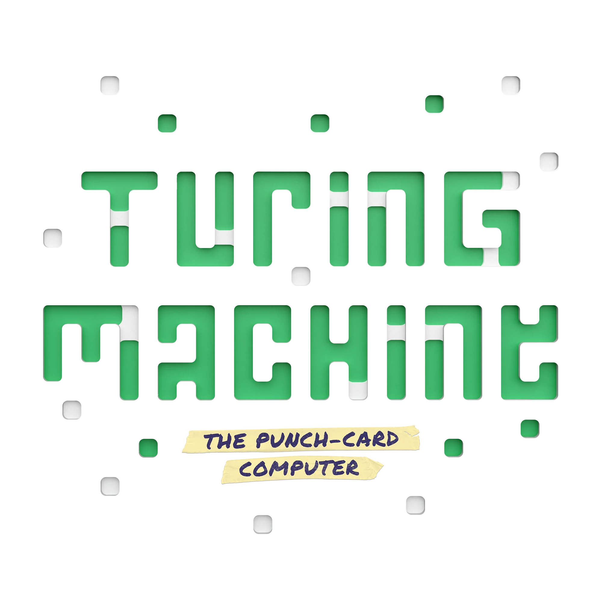

Tests : 0

Difficulté
Nombre de vérificateur
Un code secret est composé de 3 valeurs de 1 à 5 : Bleu (triangle), Jaune (carré) et Violet (cercle). Un jeu de cartes de vérification est tiré au sort pour chaque énigme. Chaque carte affichée propose plusieurs critères possibles (les alternatives imprimées dessus) ; comme sur la carte physique, le curseur est toujours positionné sur le critère qui est vrai pour le code secret de cette énigme (jamais un critère faux).
Chaque carte active est identifiée par une lettre (A à F selon le nombre de cartes en jeu). Choisis un code avec les 3 sélecteurs, puis clique sur "Tester" sur une carte : comme son critère actif est toujours vrai pour le code secret, un ✅ signifie que ton code reste compatible avec le secret, et un ❌ l'élimine directement. Le critère actif d'une carte reste secret et n'est révélé qu'une fois l'énigme résolue (ou en demandant la solution). Un même code peut être testé sur plusieurs cartes (jusqu'à 3 maximum) ; une fois une carte testée pour ce code, son bouton "Tester" se grise jusqu'à ce que tu choisisses un nouveau code. Quand tu es sûr du code secret, clique sur "Soumettre". Tu peux aussi cliquer directement sur une des possibilités imprimées sur le visuel d'une carte pour la barrer d'une croix rouge (et recliquer pour l'effacer) : un simple aide-mémoire personnel pour noter les hypothèses que tu as éliminées.
Chaque ligne du tableau correspond à un code testé : les colonnes reprennent la lettre de chaque carte en jeu (✅/❌ selon le résultat obtenu), et la colonne 💡 trace tes soumissions de réponse finale (✅ en cas de succès, ❌ sinon).
Accessible via le bouton latéral 📝 (ou toujours visible sur grand écran), il propose une grille de chiffres pour chaque couleur : clique sur un chiffre pour le barrer (éliminé) une première fois, l'entourer (validé) une deuxième fois, puis revenir à l'état neutre. C'est un simple aide-mémoire personnel, il n'influence pas le jeu.
Chaque énigme a un code alphanumérique unique, affiché en haut de l'écran. Clique dessus pour le copier, puis partage-le à quelqu'un d'autre (ou note-le) pour qu'il puisse charger exactement la même énigme via le menu "Nouvelle énigme" → "Charger une énigme existante".
Deux réglages indépendants permettent de personnaliser une énigme générée aléatoirement. La difficulté (Facile / Standard / Expert) limite les numéros de cartes pouvant être tirées au sort : Facile n'utilise que les cartes numérotées jusqu'à 20, Standard jusqu'à 33, et Expert autorise les 48 cartes. La durée (Express / Court / Normal / Long) fixe le nombre de cartes actives dans l'énigme, de 3 à 6. Quels que soient ces réglages, l'énigme garantit toujours une solution unique parmi les 125 codes possibles, et aucune carte n'est superflue.
Es-tu sûr de vouloir soumettre ce code comme réponse finale ?